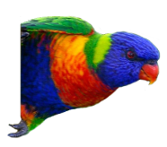

<div class='pg intro'>
	<div class='bird-side'>
		
	</div>
	<p>
		Lorikeet is a tropical rare bird that tries to find it's resting place
		in an oase of sound.
	</p>
	<div class='buttons'>
    <a class='btn big' href='mailto:grdw@protonmail.com'>Book</a>
  </div>
</div>

<div class='pg gigs'>
  <ul>
    {% for event_hash in site.data.events %}
      <li>
        <strong> {{ event_hash[0] }}</strong>
        <ul>
          {% for event in event_hash[1] %}
						{% capture nowunix %}{{'now' | date: '%s'}}{% endcapture %}
						{% capture posttime %}{{ event['date'] | date: '%s'}}{% endcapture%}

						<li class="{% if posttime < nowunix %}old{% endif %}">
              <span>{{ event['date'] | date: '%m/%d' }}</span>
              {{ event['event'] }}
            </li>
          {% endfor %}
        </ul>
      </li>
    {% endfor %}
  </ul>
</div>

<div class='pg mixcloud'>
  <iframe frameborder='0' height='181' src='https://www.mixcloud.com/widget/iframe/?feed=https%3A%2F%2Fwww.mixcloud.com%2Florikeet%2Fexotic-jazzytronics%2F' width='100%'></iframe>
</div>
